El reel de «N piezas», con el rostro real de Nei
Escribes un roteiro.json; rtex devuelve un reel vertical 1080×1920 sobre un solo tema: un gancho potente en el cuadro 0, los pasos numerados con índice, prueba con fuente, una salvedad honesta y, al final, una pregunta de opinión para que el público responda. Quien habla es el avatar de Nei en HeyGen.
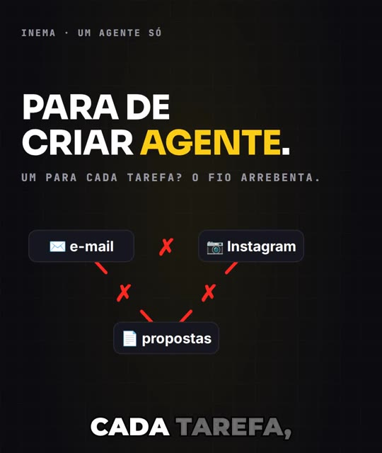
rtex es el motor que usa Nei para crear reels (videos cortos verticales) de INEMA con su propio rostro: su avatar en HeyGen habla el guion, y el motor superpone las pantallas, los subtítulos palabra por palabra y la tarjeta final. Cada video trata un solo tema, en un formato fijo: un gancho potente en el cuadro de apertura, los pasos del método en «N piezas» y, al final, una pregunta de opinión para que el público responda en los comentarios. Un validador, un crítico automático y un QA verifican el formato antes de publicar. El código es abierto para estudiar y adaptar; para generar tu video, necesitas tu propio avatar en HeyGen, además de Python, Node, ffmpeg y Whisper.
Un formato fijo, con el presentador de verdad
Los dos tercios superiores son para el contenido y el tercio inferior es para Nei hablando durante todo el reel. Cada número lleva su fuente en pantalla, y el amarillo aparece como superficie una sola vez: en la píldora con las opciones de la pregunta final.
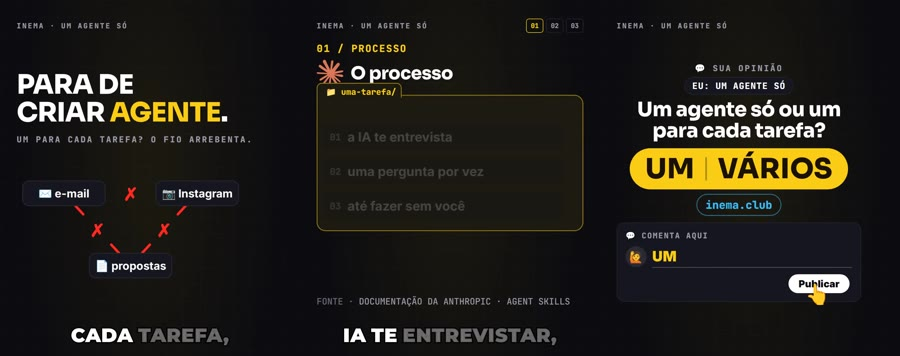
🎙️ Avatar real de Nei
La voz se envía al estudio de HeyGen mediante la suscripción; vuelve el video del avatar, Whisper marca el tiempo de cada palabra y el motor ajusta las pantallas y los subtítulos a ese tiempo.
🧩 Patrón de piezas
Un tema: gancho en el cuadro 0, prueba hasta los 20 s, el problema de quien mira, «N piezas» (los pasos) con índice visible, prueba, salvedad, máxima después de un silencio y una pregunta de opinión.
✅ Tres revisiones
El validador aplica la regla; un crítico (claude -p) califica el guion; el QA mide la duración, el ritmo, el volumen, los cambios de pantalla por minuto, el silencio, la tarjeta final y el amarillo.
Los nueve bloques del estándar rtex
Un tema por video, en este orden. El comando checar rechaza el guion si falta un bloque obligatorio o aparece fuera de lugar. Un video con cinco temas distintos (una lista) no pasa: las «N piezas» son los pasos del método de un solo tema.
- tese: el gancho (cuadro 0 y primeros 3 segundos), explicado más abajo.
- autoridade: prueba en pantalla hasta los 20 s: un número con fuente (el contador llega al valor de la fuente) o una autoridad, también con fuente.
- problema: el dolor de quien mira, justo después de la prueba, con absolución en la voz («não é culpa sua» (no es culpa tuya)) y un objeto (en el modelo, un chat tachado).
- virada: se anuncian las «N piezas»; el índice 01–N aparece antes del primer paso y se convierte en píldoras en la parte superior.
- metodo: los pasos numerados, un objeto por paso, etiqueta «0N / NOMBRE».
- prova: un hecho con fuente que confirma lo anterior.
- ressalva: las limitaciones, dichas y legibles, convertidas en instrucciones.
- maxima: antítesis breve, después de 0,5–0,9 s de silencio (desaparecen la voz y la música).
- cta: la pregunta de opinión (más abajo); la tarjeta permanece 9 s después de la última palabra.
El gancho: cuadro 0 y los primeros 3 segundos
Cuatro tipos, y solo esos
Campo gancho.tipo: contrario (ordena dejar de hacer algo que todos hacen: «PARA DE CRIAR AGENTE» (DEJA DE CREAR AGENTE)), perda (¿y si algo desapareciera?), estatistica_medo (una cifra que asusta, con fuente en pantalla) o historia_terceiro (el caso de otra persona, con cifra y fuente). Prohibido: listas («5 piezas del mes», «N cosas...»), «¿sabías que…?» y «yo hice…».
Un titular más fuerte que la voz
El titular del cuadro 0 (tela.linhas) tiene hasta 6 palabras, en mayúsculas, con una palabra amarilla (tela.destaque). Es más agresivo que lo que se dice: el texto detiene a quien desplaza el feed sin sonido, mientras la voz suaviza y explica. Ya está listo en el cuadro 0, que sirve de portada. Debajo, un objeto metafórico con daño (objeto.params.metafora, hoy "fio") cambia cada ~1 s durante los primeros 3 segundos.
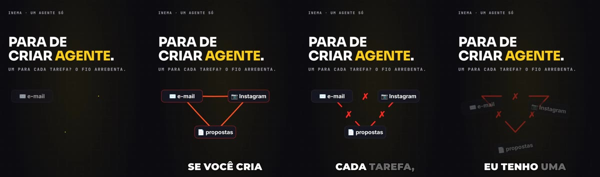
El anzuelo: una pregunta de opinión
Qué es
El video termina con una pregunta potente, emocional y con una postura, vinculada a la tesis, que la persona responde con su propia opinión: eligiendo una de dos o tres palabras («UM ou VÁRIOS?» (¿UNO o VARIOS?)) o contando su propia experiencia. Nei dice primero cuál es su postura, para provocar. La tensión de la pregunta aparece ya en el cuadro 0 y vuelve al final.
Qué no se permite
Prometer algo a quien comenta. Nada de «te mando», «te envío», «mándame el enlace», «enlace en la bio», «comenta X que…» ni «está en el comentario fijado». Nadie espera una respuesta, así que Nei no necesita responder a nadie. Se puede pedir «comenta UM ou VÁRIOS» (comenta UNO o VARIOS): lo que no se puede es vincular el comentario a un premio. Los enlaces y las fuentes pueden quedar en el comentario fijado de la publicación.
Glosario rápido
Anzuelo
La invitación a comentar al final. En rtex es una pregunta de opinión (campo isca del guion); las opciones aparecen en la única píldora amarilla del video.
Máxima
La frase que resume el final, en antítesis («Ella no es tonta. Simplemente no conoce tu trabajo»), después de un breve silencio.
Escenario
La página motor/palco.html que dibuja las pantallas. El render graba esa página a 30 cuadros por segundo.
HeyGen y estudio
HeyGen es el servicio que genera el video del avatar hablando. rtex usa el estudio (el sitio web, mediante la suscripción), en un navegador abierto en la pantalla virtual :99.
Subtítulos karaoke
Los subtítulos iluminan una palabra a la vez al ritmo de la voz, con las palabras clave en color.
LUFS
Medida del volumen percibido. −14 LUFS es el volumen que las redes usan como estándar.
CTA
«Llamada a la acción»: la invitación final del video. Aquí es una sola: la pregunta de opinión.
Whisper y Playwright
Whisper transcribe la voz y asigna el tiempo a cada palabra. Playwright abre el escenario en un navegador y graba cada cuadro.
Crítico y revisor
El crítico es un claude -p que califica cada bloque del guion. El revisor independiente es otra sesión que solo examina el resultado.
QA y hoja de control
QA («control de calidad») es el comando que mide el video terminado. La hoja es la imagen que reúne 16 cuadros del video para revisarlo todo de una vez.
Píldora
Etiqueta con esquinas redondeadas. Las píldoras 01–05 de la parte superior muestran en qué pieza está el video; la píldora amarilla contiene las opciones de la pregunta final.
Bot y cola
Solo en la máquina de Nei: el bot es el robot de Telegram que recibe el video para que lo vea; la cola publica un video cada 2 h en el canal de YouTube indicado en el guion.
Qué cambia respecto a r7ex
rtex parte del motor r7ex v1.1.0 (copiado, no importado: modificar uno no afecta al otro). La máquina se mantiene; cambian el guion y la pantalla.
| r7ex | rtex | |
|---|---|---|
| Guion | 7 pasos de activación: gancho con cifra → miedo → deseo → facilidad → descubrimiento → beneficio → comentario | 9 bloques de piezas: tesis → autoridad → problema → giro → método → prueba → salvedad → máxima → CTA |
| Apertura | título dibujado en la imagen de apertura | titular de hasta 6 palabras en el cuadro 0 (gancho contrario, pérdida, estadística de miedo o historia de un tercero) y un objeto que se rompe durante los primeros 3 segundos |
| Avatar | media pantalla en la parte inferior durante el gancho, luego en una esquina | en el tercio inferior durante todo el reel; los 2/3 superiores son para el contenido |
| Estructura en pantalla | paneles al ritmo de la voz, contador | índice 01–N convertido en píldoras en la parte superior, etiqueta «0N / NOMBRE» en cada pieza |
| Honestidad | — | salvedad obligatoria antes de la máxima; cada cifra lleva una fuente verificada hace ≤ 7 días |
| Cierre | comentario «tá tudo no inema.club» (está todo en inema.club) | silencio, máxima en antítesis, pregunta de opinión con postura (sin nada que entregar), tarjeta de 9 s |
| Color | negro + amarillo de noticiero | negro INEMA con amarillo dosificado: una sola superficie amarilla, la píldora con las opciones de la pregunta (el QA las cuenta) |
| Se mantiene | avatar mediante el estudio de HeyGen, subtítulos karaoke, ritmo de la voz, Whisper, crítico + revisor independiente, cola de publicación con temporizador y envío al bot de Telegram (estos dos, solo en la máquina de Nei) | |
Del guion a video.mp4
El rtex.py ejecuta cada paso. El avatar es la parte más lenta: el estudio puede tardar de minutos a horas en entregar el video.
Guion verificado
checar comprueba el gancho, la prueba antes de los 20 s, un solo tema, el orden de los bloques, que el índice coincida con el método, que la voz no use cifras ni «!», que cada cifra tenga fuente, que la pregunta de opinión no prometa nada y que la duración estimada sea de 60–90 s. critico lo califica.
Avatar y ritmo
La voz se envía al estudio; vuelve el video, Whisper marca las palabras, la voz (HeyGen habla rápido) se alarga hasta ~182 palabras/min (como máximo un 12 %) y se añade el silencio antes de la máxima.
Escena, render y QA
cena vincula cada pantalla a una palabra de la voz; render graba el escenario, pone el avatar abajo y añade la música; qa mide todo y crea la hoja de control.
Qué debe haber en la máquina
El motor se creó para la máquina de Nei (Linux). Las rutas que aparecen abajo están en el código; en otra máquina, usa las variables mencionadas o ajusta el archivo.
Avatar: HeyGen mediante el estudio
Una cuenta de HeyGen con tu avatar y tu voz. El estudio se abre en un navegador con ventana, así que necesita una pantalla: la pantalla virtual :99 (Xvfb). Solo una vez: (1) inicia sesión en un perfil del navegador de Playwright; (2) en el estudio, crea un proyecto de video con el nombre exacto TEMPLATE-AVATAR16 (u otro en RTEX_HEYGEN_TEMPLATE), con tu avatar y tu voz: el motor abre ese proyecto, elige «editar como nuevo» y cambia la voz; (3) agrega tu clave de API de HeyGen al archivo que lee el descargador (ruta fija en heygen/heygen-estudio-baixar.mjs; solo consulta el estado y descarga el video).
npx playwright open --user-data-dir ~/.cache/inemaccbot/perfil-heygen https://app.heygen.com # login; u otro dir en RTEX_HEYGEN_PERFIL mkdir -p ~/projetos/openpcbotv2 echo "HEYGEN_API_KEY=sua-chave" >> ~/projetos/openpcbotv2/.env
Whisper (inemavox)
inematds/inemavox en ~/projetos/inemavox (u otra ruta en CS_INEMAVOX). rtex intenta usar Whisper en segundo plano en el puerto 7871 y, si no está disponible, ejecuta el transcrever_v1.py de inemavox con large-v3 (unos 10 GB en la tarjeta gráfica NVIDIA). Python para el servicio Whisper se define en CS_WHISPER_PY; la configuración predeterminada apunta a un entorno conda chatterbox de la máquina de Nei, así que ajústala para tu equipo.
git clone https://github.com/inematds/inemavox ~/projetos/inemavox # dependências: consultar el README de inemavox export CS_WHISPER_PY=/caminho/do/seu/python3
Node, ffmpeg y Python
Node 18+, ffmpeg con ffprobe, Python 3 con Pillow, numpy y cairosvg, la fuente DejaVu (paquete fonts-dejavu-core, usada en la etiqueta del nombre) y la CLI claude con sesión iniciada para el crítico. Los logos de productos (por ejemplo, el de Claude en el guion modelo) provienen de un paquete abierto que ferramentas/logos.sh descarga una vez en ~/.cache/r7ex/lobe-icons; sin él, el paso prints se detiene.
git clone https://github.com/inematds/rtex cd rtex npm i npx playwright install chromium pip install --user pillow numpy cairosvg # o dentro de un venv bash ferramentas/logos.sh # logos -> ~/.cache/r7ex/lobe-icons Xvfb :99 -screen 0 1920x1080x24 & # solo para el estudio de HeyGen
python3 rtex.py fazer <pasta> --de seu-video.mp4. Lo que se dice en el video debe coincidir con el guion en al menos un 85 % (el motor lo verifica con Whisper). Para este camino no necesitas HeyGen, clave ni Xvfb. Whisper escucha en portugués; para un reel en otro idioma, usa CS_LANG=en o CS_LANG=es.enviar envía el video al bot de Telegram de Nei (bin/enviar_bot_v3.mjs) y fila pone el video en la cola de publicación de r7ex (~/projetos/r7ex/fila/fila.py o RTEX_FILA). Si no estás en la máquina de Nei, detente en qa y publica como prefieras.Del tema al video verificado
Cada edición se guarda en edicoes/<data>-<slug>/. El atajo fazer (paso 9) ejecuta checar, prints, avatar, cena, render y qa de una vez.
Crea la edición tú
Copia el guion modelo (un tema: «un solo agente y una carpeta por tarea») a una carpeta nueva con la fecha de hoy. Las fuentes del modelo se verificaron el 28/10/2026 y checar rechaza fuentes de más de 7 días: después del 04/11/2026 el modelo intacto fallará a propósito (no es un defecto). Cambia las fuentes por las tuyas en el paso 2.
python3 rtex.py novo minha-edicao # -> edicoes/AAAA-MM-DD-minha-edicao/roteiro.json
Escribe el guion con las fuentes tú
Verifica cada cifra en la fuente el mismo día y anótala en fontes[] con valor y verificado_em. Luego escribe el gancho, los bloques (formato en «El roteiro.json»), lo que se dice por extenso y la pregunta del anzuelo.
Valida y pásalo por el crítico
checar aplica reglas estrictas. critico pide una calificación a claude -p mediante la suscripción: pasa sin bloqueos, tesis (el gancho) ≥ 8, promedio ≥ 7,5 y ningún bloque por debajo de 6. Guarda critica.json.
python3 rtex.py checar edicoes/AAAA-MM-DD-minha-edicao python3 rtex.py critico edicoes/AAAA-MM-DD-minha-edicao
Autoriza y envía el avatar tú
El envío solo se realiza con una aprobación escrita para esta producción en avatar/APROVADO_HEYGEN (un avatar por reel). Después del envío, la voz queda fijada: los errores de texto se corrigen en los subtítulos (campo trocas del guion), no con un segundo avatar.
mkdir -p edicoes/AAAA-MM-DD-minha-edicao/avatar echo "ok para este reel" > edicoes/AAAA-MM-DD-minha-edicao/avatar/APROVADO_HEYGEN python3 rtex.py avatar-enviar edicoes/AAAA-MM-DD-minha-edicao # guarda avatar/video_id.txt
Toma capturas de las páginas
Capturas reales de las páginas de GitHub citadas y de los logos. Abre las capturas y léelas antes de seguir.
python3 rtex.py prints edicoes/AAAA-MM-DD-minha-edicao
Vista previa sin avatar opcional
Mientras trabaja el estudio, en una copia de la carpeta: tiempos sintéticos, escena y algunos cuadros sueltos (en segundos). Así encontrarás errores de diseño antes de que llegue el avatar. La vista previa no contacta al estudio ni consume otro avatar.
rm -rf /tmp/previa && cp -r edicoes/AAAA-MM-DD-minha-edicao /tmp/previa python3 ferramentas/tempos_sinteticos.py /tmp/previa python3 rtex.py cena /tmp/previa node motor/render.mjs /tmp/previa --quadros 1,10,20 # -> /tmp/previa/q_1.jpg, q_10.jpg, q_20.jpg
Descarga el avatar y ajusta el ritmo
avatar-conferir consulta el estado (listo o en proceso). avatar espera, descarga, marca las palabras con Whisper, alarga la voz hasta ~182 palabras/min (HeyGen habla rápido), añade el silencio antes de la máxima y deja 9 s la tarjeta.
python3 rtex.py avatar-conferir edicoes/AAAA-MM-DD-minha-edicao python3 rtex.py avatar edicoes/AAAA-MM-DD-minha-edicao python3 rtex.py avatar edicoes/AAAA-MM-DD-minha-edicao --de avatar.mp4 # reutilizar un mp4
Escena, render y QA
El escenario a 30 fps, el avatar en el tercio inferior, la música y −14 LUFS en dos pasadas; QA guarda build/qa.json y la hoja build/folha.jpg con 16 cuadros.
python3 rtex.py cena edicoes/AAAA-MM-DD-minha-edicao python3 rtex.py render edicoes/AAAA-MM-DD-minha-edicao # -> video.mp4 python3 rtex.py qa edicoes/AAAA-MM-DD-minha-edicao
O hazlo todo de una vez
checar → prints → avatar → cena → render → qa. No ejecuta critico (paso 3). Sin --de y si el avatar no está listo, lo envía al estudio automáticamente y espera hasta ~290 min a que HeyGen lo entregue; para hacerlo, debe existir el archivo avatar/APROVADO_HEYGEN del paso 4; de lo contrario, se detiene y muestra ese aviso. Con --de no necesitas HeyGen, pero sigues necesitando Whisper, los logos e internet para las capturas de GitHub.
python3 rtex.py fazer edicoes/AAAA-MM-DD-minha-edicao python3 rtex.py fazer edicoes/AAAA-MM-DD-minha-edicao --de seu-video.mp4 # sin el estudio
Revisa, corrige y entrega tú
Lee la hoja y el qa.json; pide una revisión a alguien que no haya escrito el guion. El anzuelo no promete nada, así que no hay nada que preparar para quien comente. En la máquina de Nei, enviar envía el video al bot y fila lo pone en la cola del canal (nunca lo sube directamente).
python3 rtex.py enviar edicoes/AAAA-MM-DD-minha-edicao python3 rtex.py fila edicoes/AAAA-MM-DD-minha-edicao
El formato del guion, en una pantalla
Fragmento abreviado del guion modelo (las líneas // no son JSON válido; el archivo completo está en modelo/roteiro.json).
{
"versao": "rtex/1", "tema": "Para de criar agente: um agente só e uma pasta por tarefa",
"gancho": { "tipo": "contrario" },
"isca": { "tipo": "opiniao", "pergunta": "Um agente só ou um para cada tarefa?",
"opcoes": ["UM", "VÁRIOS"], "lado": "um agente só", "tensao": "agente" },
"fontes": [ { "id": "skills", "url": "https://docs.anthropic.com/en/docs/agents-and-tools/agent-skills", "valor": "uma pasta por tarefa", "verificado_em": "2026-10-28" } ],
"trocas": { "é cê cê": "ECC", "três peças": "3 peças" },
"blocos": [
{ "tipo": "tese", "fala": "Se você cria um agente para cada tarefa, eu tenho uma má notícia: o fio que liga todos eles vai arrebentar.",
"tela": { "linhas": ["PARA DE", "CRIAR AGENTE."], "destaque": "AGENTE" },
"objeto": { "comp": "tese", "params": { "metafora": "fio", "nos": ["✉️ e-mail", "📷 Instagram", "📄 propostas"] } } },
// ... autoridad (fuente: skills), problema ("não é culpa sua"), giro ...
{ "tipo": "metodo", "n": 1, "nome": "PROCESSO", "fonte": "skills",
"fala": "Um: o processo. Peça para a IA te entrevistar, uma pergunta por vez, até ela fazer sem você.",
"objeto": { "comp": "pasta", "params": { "titulo": "O processo" } } },
// ... método 2–3, prueba, salvedad, máxima ...
{ "tipo": "cta", "fala": "Eu já escolhi o meu lado: um agente só. E você? Um agente só ou um para cada tarefa? Comenta um ou vários.",
"objeto": { "comp": "isca", "params": { "em": "Comenta" } } }
],
"publicar": { "descricao": "... Um agente só ou um para cada tarefa?" }
}
Campos principales
tipo (el orden de los nueve bloques) · fala (por extenso, sin cifras ni «!») · tela (texto grande y destacado) · objeto.comp + objeto.params (lo que dibuja el escenario) · n y nome en los elementos del método (iguales al índice del giro) · fonte (id en fontes). En la parte superior: trocas (cómo aparece la voz en los subtítulos), cores (palabras en color), ritmo y publicar (título, descripción, canal de la cola). checar también exige: un gancho.tipo válido y un titular del cuadro 0 de hasta 6 palabras en mayúsculas; objeto.params.metafora en la tesis; en la máxima, linha1 y linha2 con hasta 7 palabras cada una; fuentes verificadas hace no más de 7 días; y, en isca: pergunta que termine en «?» (hasta 70 caracteres) y se diga en el CTA, 2 o 3 opcoes de una palabra en mayúsculas que se digan en el CTA (pregunta abierta: exemplo, la respuesta que escribe la mano), lado, tensao (una palabra de la pregunta que aparece en el cuadro 0 y vuelve al final) y publicar.descricao que termine con la pregunta. Los campos antiguos isca.palavra e isca.entregavel dan error.
Componentes del escenario (objeto.comp)
tese, contador, chat_riscado, indice (con las píldoras de progreso), pasta, repo (captura real + estrellas), manchete, selo_prova, ressalva, maxima (destello tipográfico) e isca (la pregunta, la píldora amarilla con las opciones y el cuadro de comentarios). La tese con metafora: "fio" dibuja el objeto que se rompe en el cuadro 0.
«5 novedades de IA del mes: la más útil es una carpeta»
La primera edición, creada por completo con el motor y publicada en YouTube. Es del formato v1.0.0: gancho de lista, cinco temas y «comenta PASTA» (comenta CARPETA) con enlaces prometidos a quien comentara. La v1.1.0 lo cambió por un gancho potente, un tema por video y la pregunta de opinión; el checar actual rechaza este guion a propósito. El guion está en edicoes/2026-10-28-cinco-pecas-ia/roteiro.json y las propuestas de pregunta y titular para el próximo, en PROPOSTA-ISCA.md, en la misma carpeta.
Qué midió el QA
| Duración | 81,1 s |
| Resolución | 1080×1920 · 30 fps |
| Ritmo de la voz | 180 palabras/min |
| Volumen | −14,0 LUFS |
| Cambios de pantalla | 36 por minuto |
| Mayor tramo sin cambios | 3,5 s |
| Silencio antes de la máxima | 0,58 s |
| Tarjeta final | 9,0 s |
| Superficies amarillas | 1 (el anzuelo) |
Cuadro a cuadro (edición publicada, formato v1.0.0)
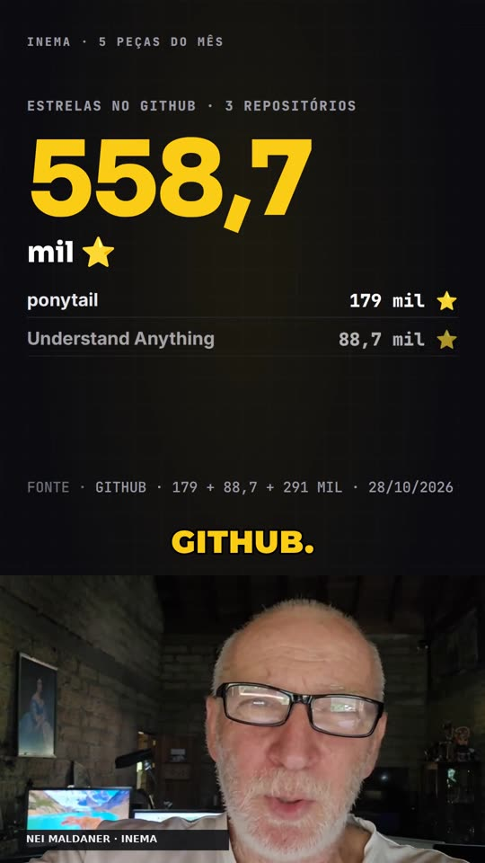
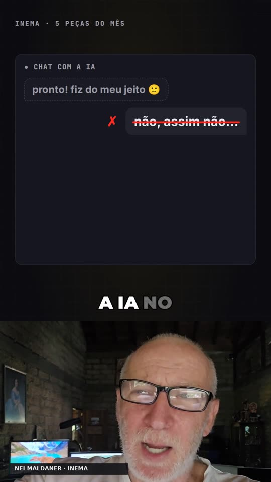
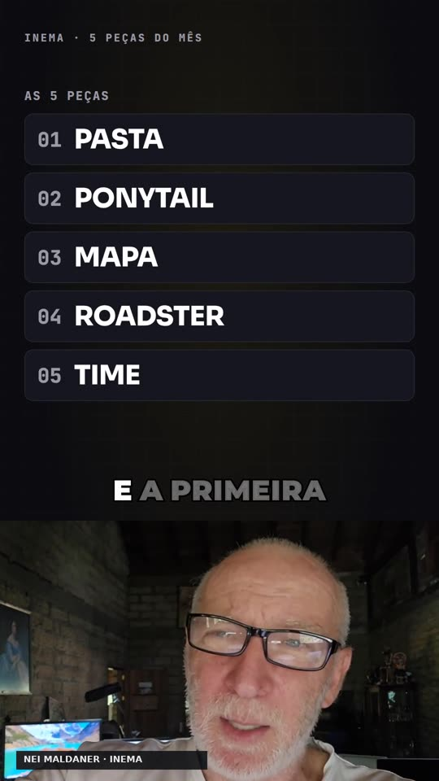
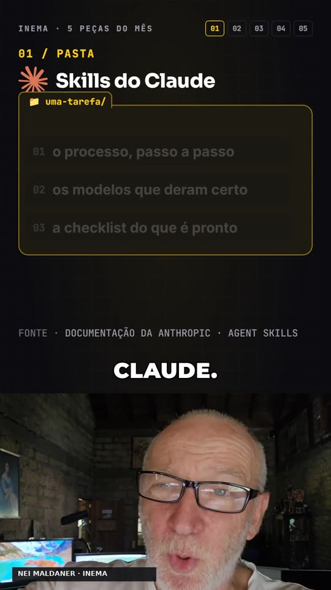
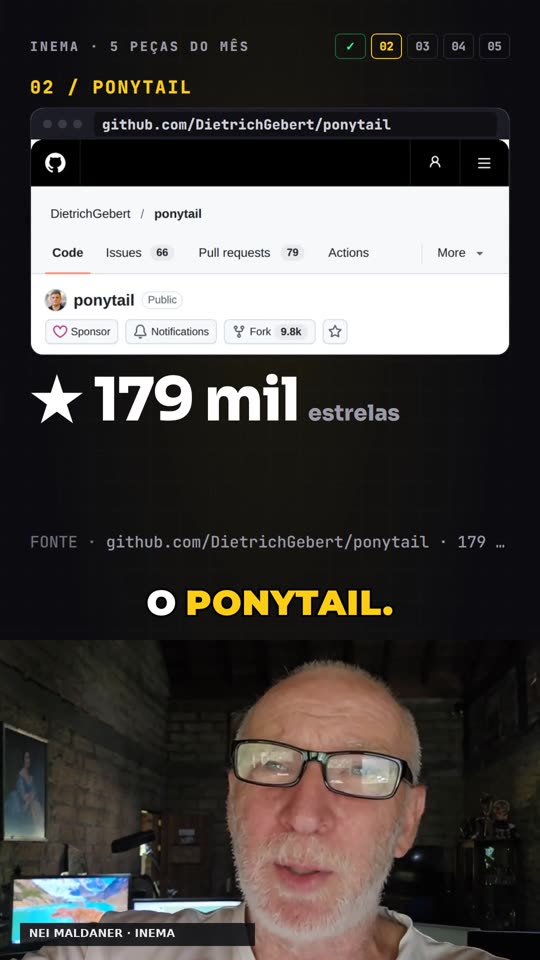
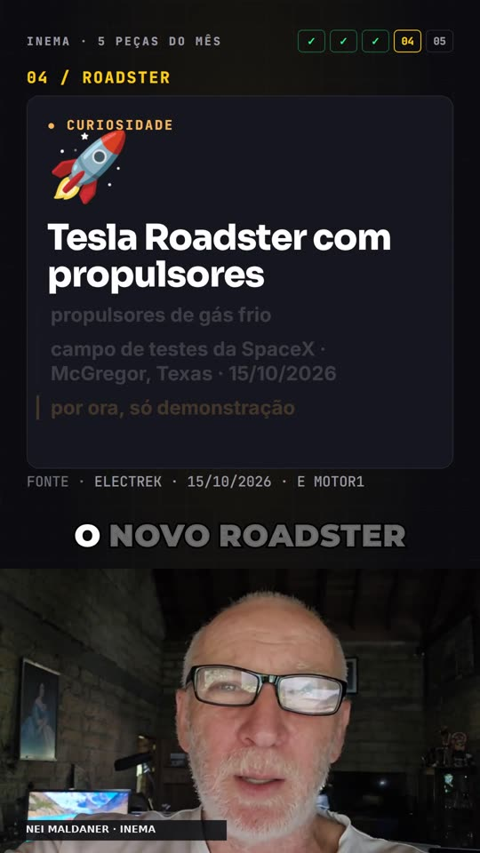
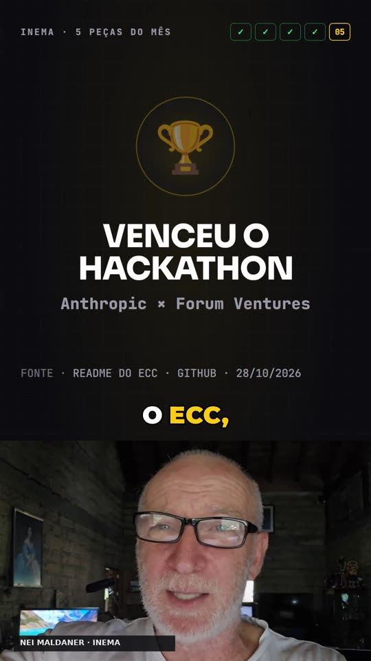
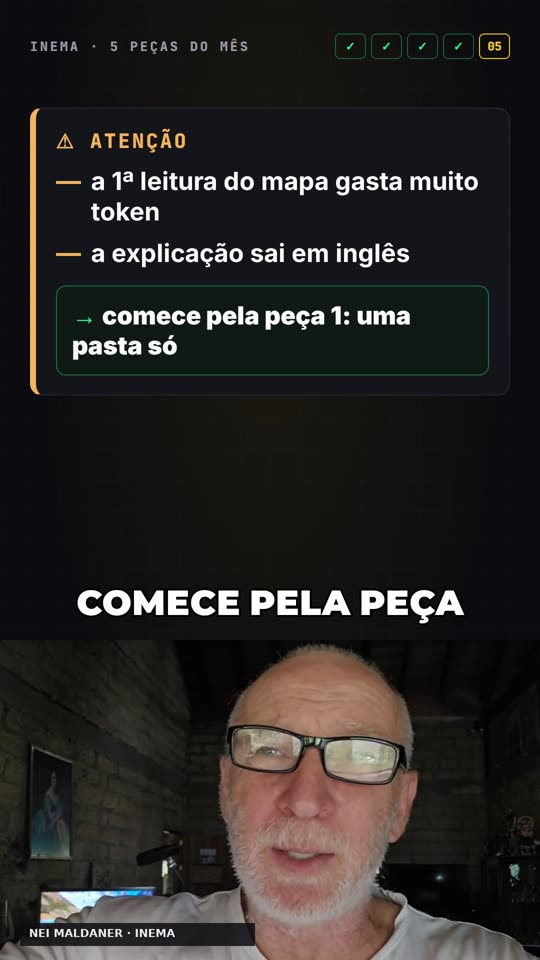
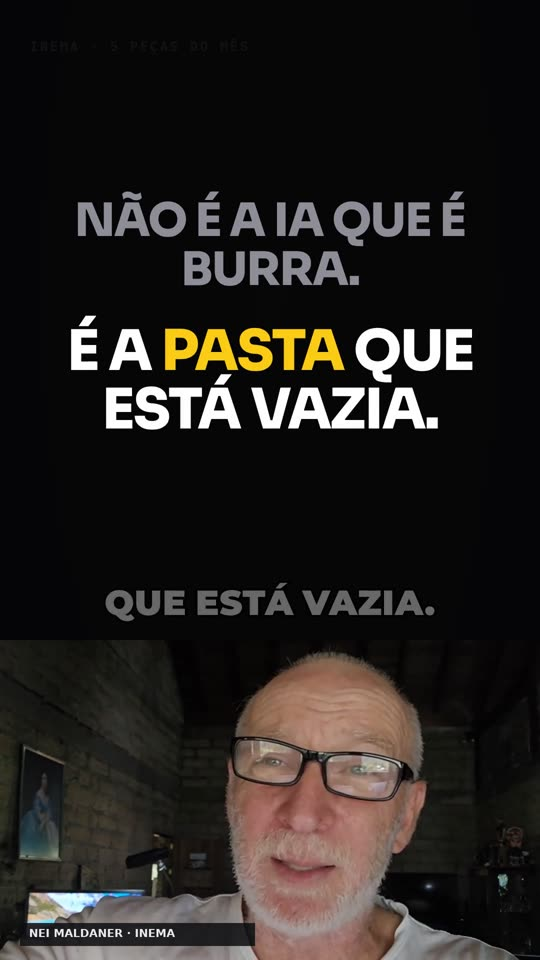
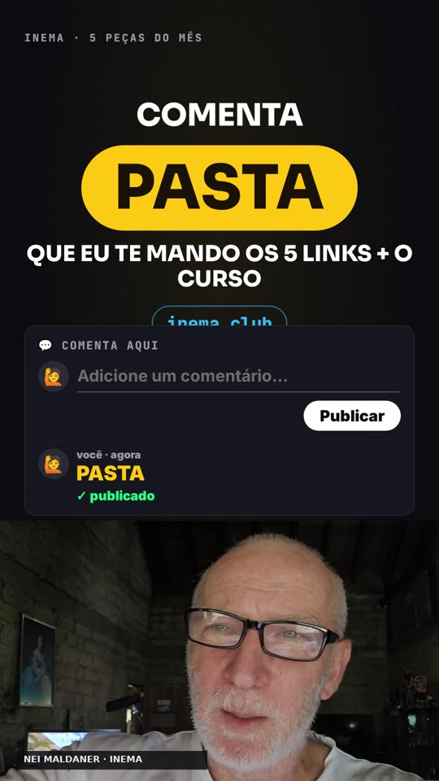
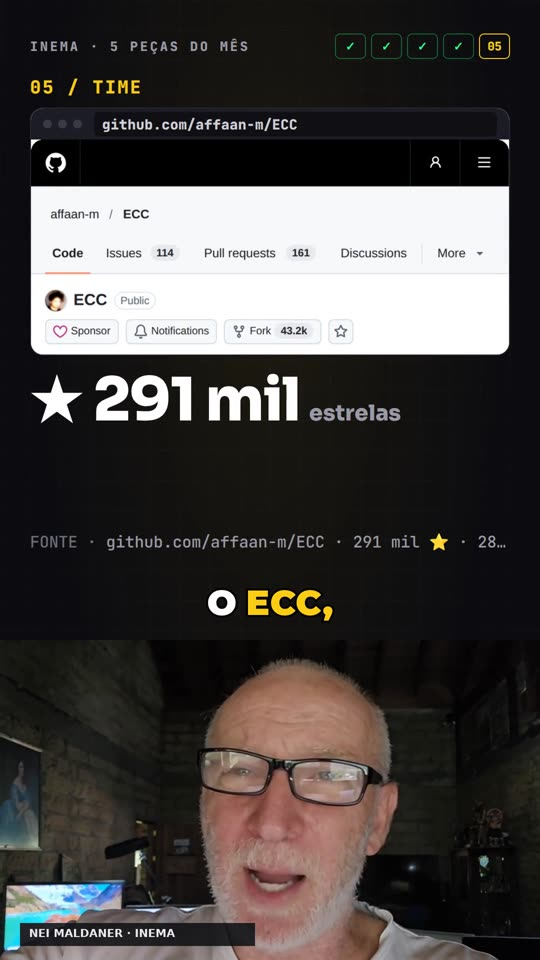
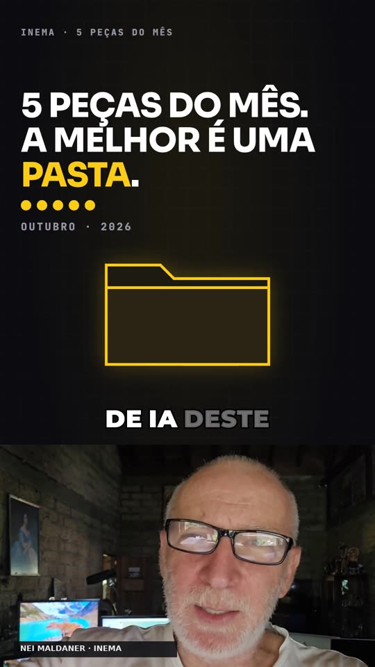
La hoja que genera el QA
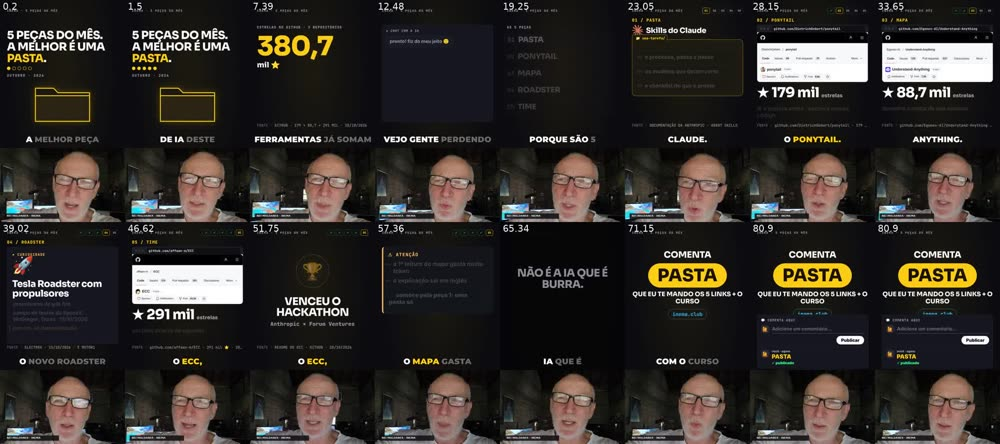
En qué punto está el proyecto
Lo que existe hoy en el repositorio y lo que queda para después.
/rtex, modo largo (110–135 s) y versión clara.